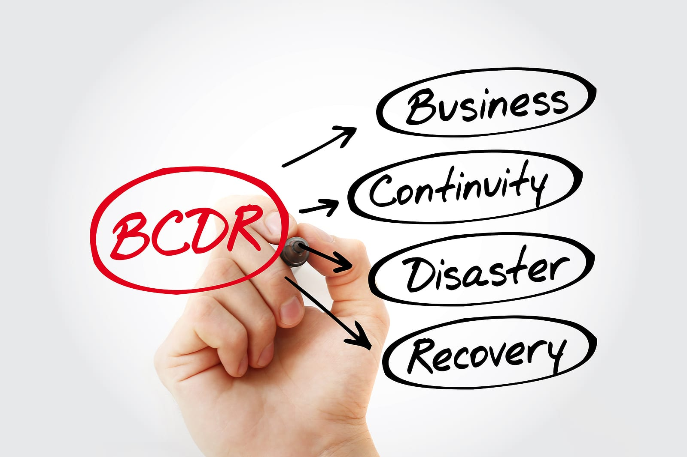

IT Consulting Services We Offer Include:.

Our information technology consulting firm delivers custom IT consultancy services covering a variety of business technology strategies. Unlike many other IT consulting firms, our team provides strategic guidance on a variety of topics, including cloud strategy, IT budget planning, risk management, disaster recovery planning, business continuity planning, IT assessment, stratetgic planning, and communications and carrier services. Please contact us if you have interest in any IT consulting services or other topics not listed here.
- Governance, Risk, & Compliance
-
We work with you to assess, plan, implement, and manage IT frameworks for a successful alignment of infrastructure and organizational strategy for more click here
- Business Continuity & Disaster Recovery
-
We help you devise a business continuity plan to keep your critical systems and processes safe while providing you with peace of mind for more information click here
- IT Strategy & Planning
-
Our dedicated team of technical experts work with you to develop an IT strategy to ensure your technology decisions meet your business needs for more information.click here
- IT Assessments
-
Our information technology assessments help you gain a better understanding of your IT environment to support your key business goals and objectives for more information click here